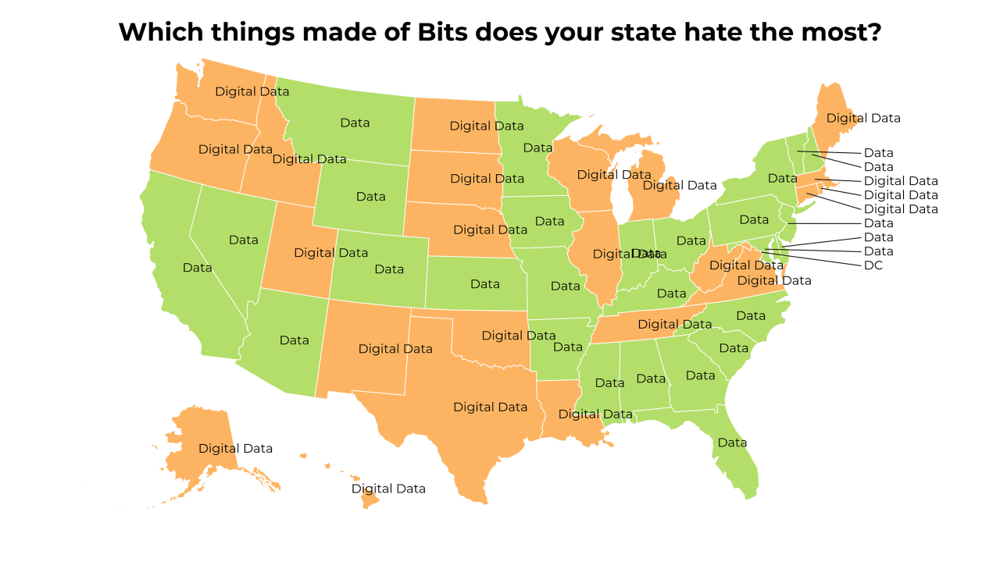
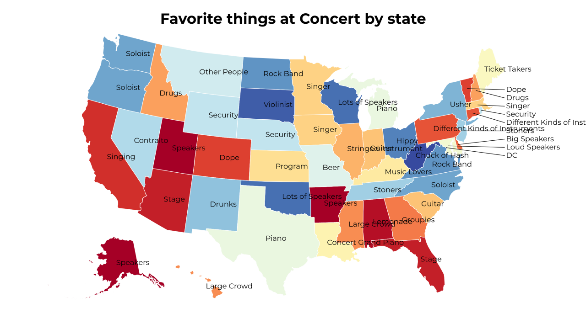
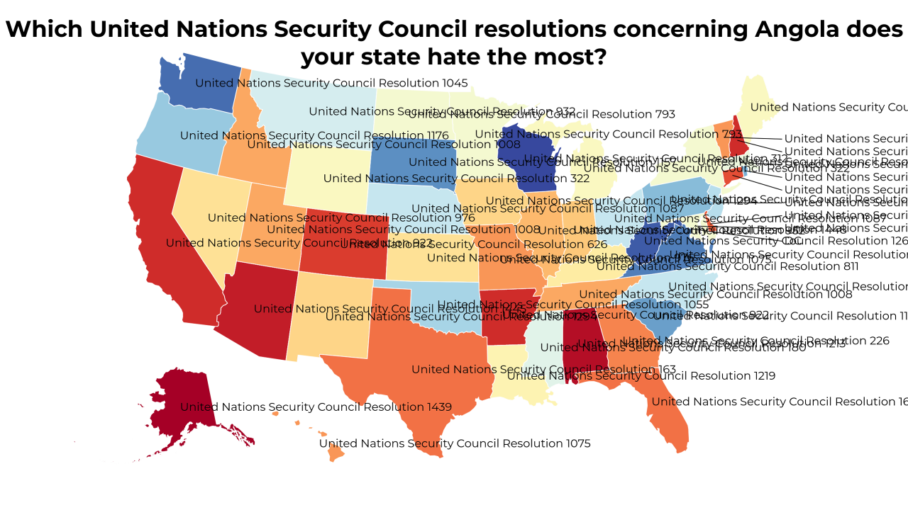
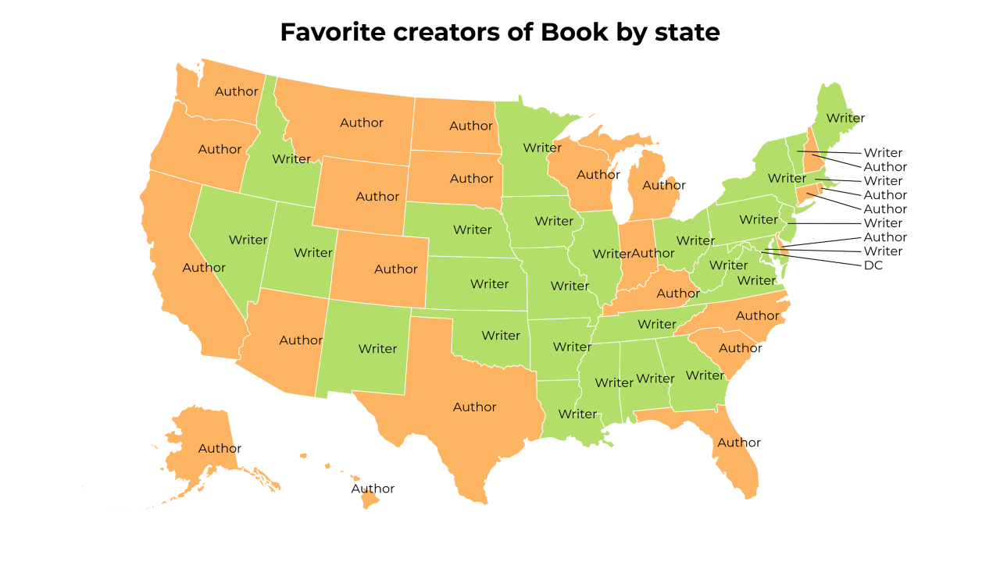
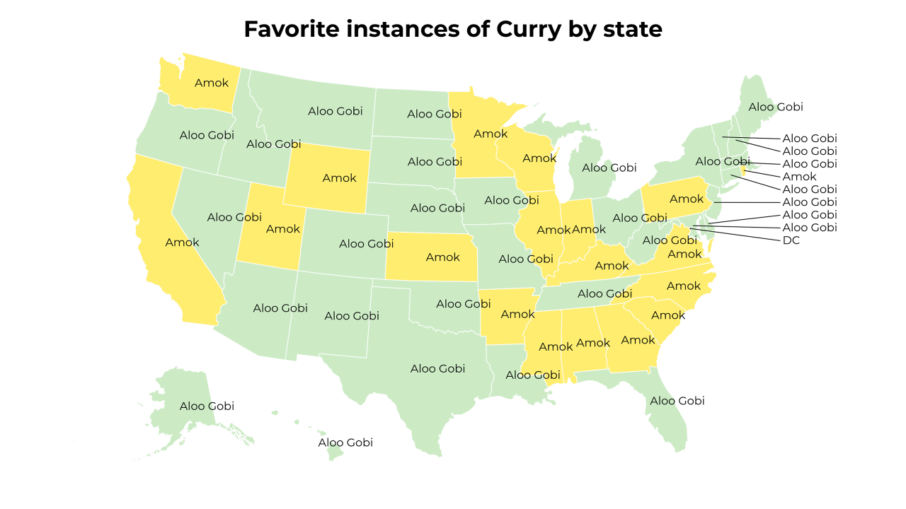
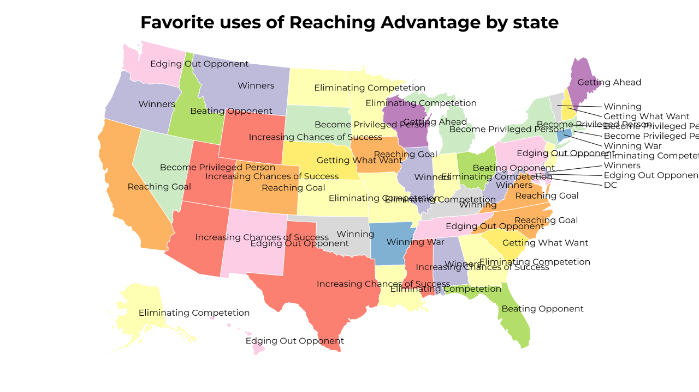
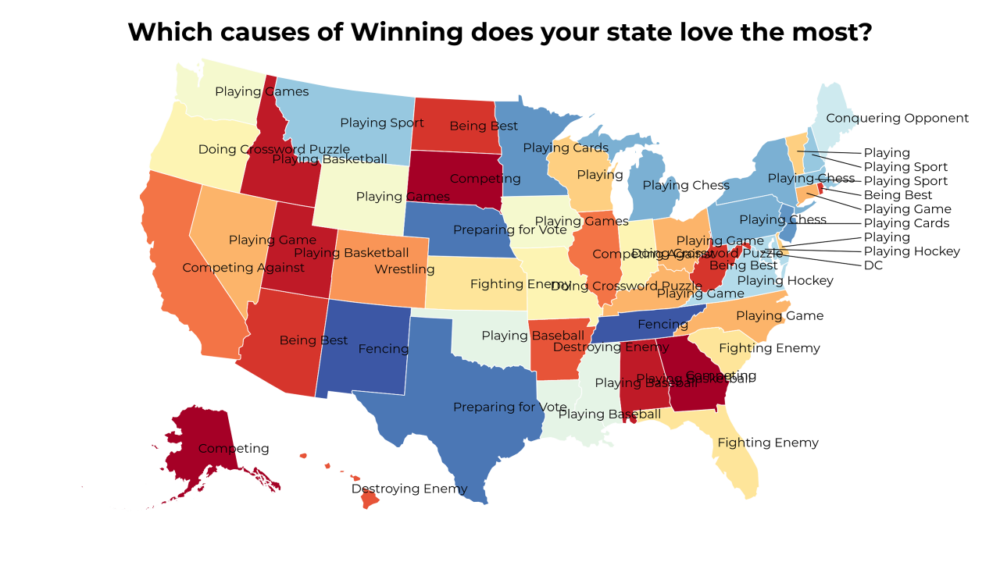
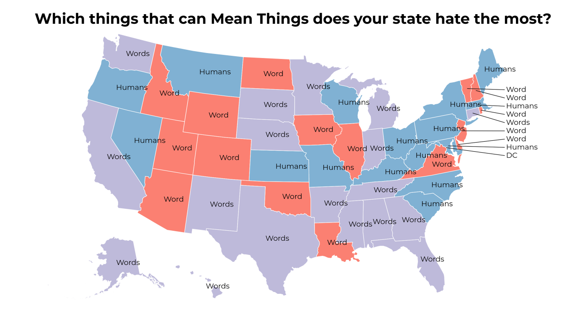

A Land of Contrasts
2018-7-4 11:30:23

Which things made of Bits does your state hate the most?
2018-7-4 05:30:17

Favorite things at Concert by state
2018-7-4 02:31:18

Which United Nations Security Council resolutions concerning Angola does your state hate the most?
2018-7-3 23:30:17

Favorite creators of Book by state
2018-7-3 20:30:16

Favorite instances of Curry by state
2018-7-3 17:30:17

Favorite uses of Reaching Advantage by state
2018-7-3 14:30:17

Which causes of Winning does your state love the most?
2018-7-3 11:30:17

Which things that can Mean Things does your state hate the most?
58
|
57
|
56
|
55
|
54
|
53
|
52
|
51
|
50
|
49
|
48
|
47
|
46
|
45
|
44
|
43
|
42
|
41
|
40
|
39
|
38
|
37
|
36
|
35
|
34
|
33
|
32
|
31
|
30
|
29
|
28
|
27
|
26
|
25
|
24
|
23
|
22
|
21
|
20
|
19
|
18
|
17
|
16
|
15
|
14
|
13
|
12
|
11
|
10
|
9
|
8
|
7
|
6
|
5
|
4
|
3
|
2
|
1
|
0